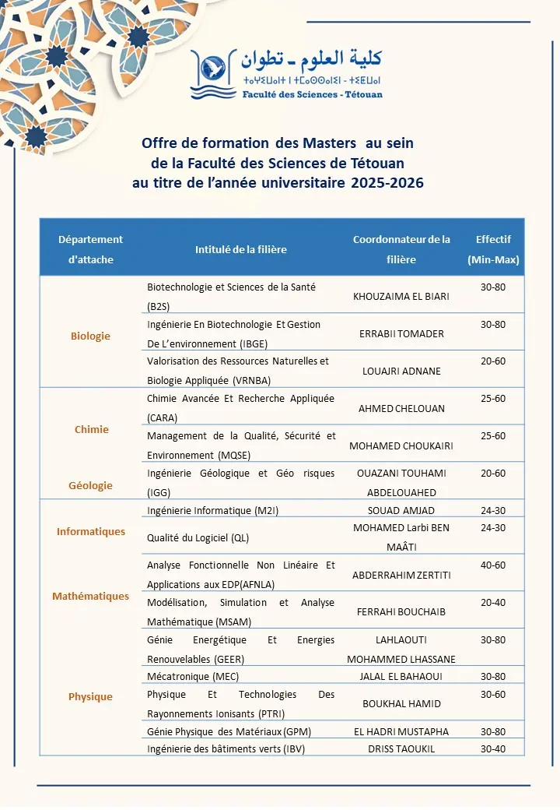

Le Doyen de la Faculté des Sciences de Tétouan informe l’ensemble des étudiantes et étudiants titulaires d’une Licence ou d’un diplôme équivalent de l’ouverture de la plateforme de candidature pour l’accès au cycle Master au titre de l’année universitaire 2025–2026.
Période de candidature en ligne : du 18 octobre au 24 octobre 2025
Plateforme de candidature : https://master-fs.uae.ac.ma/
